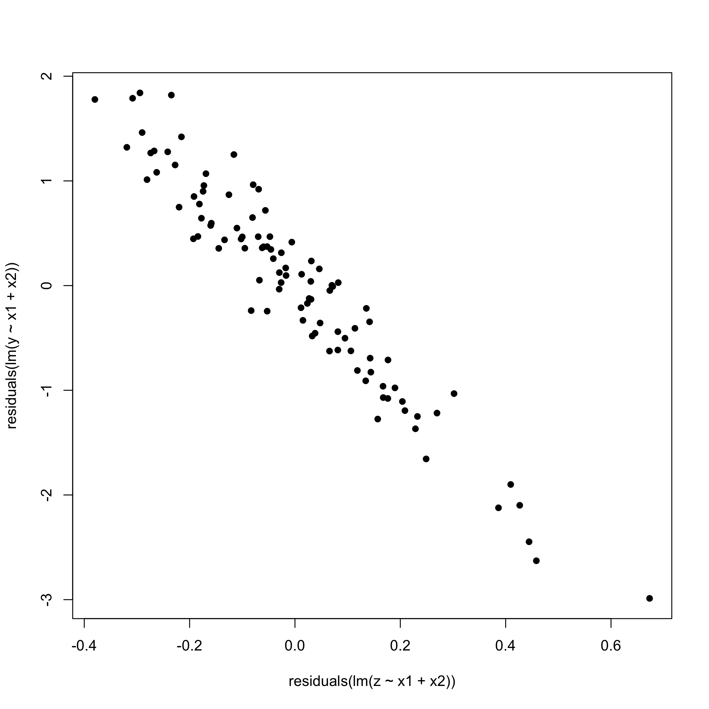

| patient | base | fev1 | fev2 | fev3 | fev4 | fev5 | fev6 | fev7 | fev8 | drug |
|---|---|---|---|---|---|---|---|---|---|---|
| 1 | 2.46 | 2.68 | 2.76 | 2.50 | 2.30 | 2.14 | 2.40 | 2.33 | 2.20 | a |
| 2 | 3.50 | 3.95 | 3.65 | 2.93 | 2.53 | 3.04 | 3.37 | 3.14 | 2.62 | a |
| 3 | 1.96 | 2.28 | 2.34 | 2.29 | 2.43 | 2.06 | 2.18 | 2.28 | 2.29 | a |
| 4 | 3.44 | 4.08 | 3.87 | 3.79 | 3.30 | 3.80 | 3.24 | 2.98 | 2.91 | a |
| 5 | 2.80 | 4.09 | 3.90 | 3.54 | 3.35 | 3.15 | 3.23 | 3.46 | 3.27 | a |
| 6 | 2.36 | 3.79 | 3.97 | 3.78 | 3.69 | 3.31 | 2.83 | 2.72 | 3.00 | a |
Exercises A
Statistics III - CdL SSE
Author
Affiliation
Tommaso Rigon
Università degli Studi di Milano-Bicocca
Homepage
The theoretical exercises described below are quite difficult. At the exam, you can expect a simplified version of them; otherwise, they would represent a formidable challenge for most of you.
On the other hand, the data analyses are more or less aligned with what you may encounter in the final examination.
Data analysis
Abrasion dataset
The dataset Abrasion (Hand et al., 1994), available in the MLGdata R package, comes from an experiment designed to evaluate how the abrasion resistance of a certain type of rubber is affected by its hardness and tensile strength. Thirty rubber samples were subjected to constant abrasion for a fixed duration, and the resulting weight loss (perdita, in grams per hour) was recorded. For each sample, the following variables were also measured:
D: hardness (in Shore degrees),
Re: tensile strength (kg/cm²).
Identify the statistical units, the response variable, and the explanatory variables, specifying the type of each variable (continuous quantitative, discrete quantitative, nominal qualitative, ordinal qualitative).
Perform a graphical analysis to assess whether a linear regression model may be appropriate.
Specify a simple linear regression model, choosing an appropriate explanatory variable.
Fit the simple linear regression model from (c) in R.
Report the estimates and 95% confidence intervals for the coefficients. Interpret the estimated values.
For each element of the R
summaryoutput of thelmobject, indicate what quantity is being calculated and match it to the formulas in the slides/textbooks.Evaluate the goodness of fit of the model.
Fit a multiple regression model in R including both explanatory variables. Interpret the estimated coefficients.
Evaluate the goodness of fit of the multiple regression model.
Obtain a 95% confidence interval for the mean weight loss when hardness is 70 Shore degrees and tensile strength is 180 kg/cm². For the same values, compute a 95% prediction interval for the response.
FEV dataset
Littell et al. (2000) reported a pharmaceutical clinical trial involving n = 72 patients, randomly assigned to three treatment groups (drug A, drug B, and placebo), with 24 patients per group. The outcome of interest was respiratory function, measured as FEV1 (forced expiratory volume in one second, in liters). The dataset FEV.dat is available here; the first six observations are shown below.
In this analysis, let y denote the FEV1 value after one hour of treatment (variable fev1 in the dataset). Define
- x_1: baseline FEV1 measurement prior to treatment (
base),
- x_2: treatment group (categorical variable
drugwith labelsa,b,p).
Download the data and then:
Fit linear models for y using the following sets of predictors: (i) x_1 only, (ii) x_2 only, (iii) both x_1 and x_2
Test to see whether the interaction terms are needed.
Check the underlying assumptions of the fitted models. If they are violated, propose a solution.
For each model, interpret the estimated parameters.
Anorexia dataset
For n = 72 young girls diagnosed with anorexia, the dataset Anorexia.dat available here records their body weights (in lbs) before and after an experimental treatment period. The data format is illustrated below. During the study, the participants were randomly assigned to one of three therapy groups:
- Control group: received the standard therapy (label
c),
- Family therapy (label
f),
- Cognitive behavioral therapy (label
b).
Fit a linear model where the outcome is the post-treatment weight and the predictors are the baseline weight and the therapy group
Check the underlying assumptions of the fitted models. If they are violated, propose a solution.
Interpret the estimated parameters of the model.
Convert the weights to kilograms (1\ \text{lb} = 0.453592\ \text{kg}), repeat the analysis, and discuss whether the results change and why.
| subj | therapy | before | after |
|---|---|---|---|
| 1 | b | 80.5 | 82.2 |
| 2 | b | 84.9 | 85.6 |
| 3 | b | 81.5 | 81.4 |
| 4 | b | 82.6 | 81.9 |
| 5 | b | 79.9 | 76.4 |
| 6 | b | 88.7 | 103.6 |
Theoretical
Exercise A
Prove that the variance-stabilizing transform for gamma random variables Y_i\sim \text{Gamma}(\alpha, \beta_i) with mean \mu_i = \alpha/\beta_i and variance \alpha/\beta_i^2, is the logarithm g(Y_i) = \log(Y_i).
Hint: use the fact that if Y_i \sim \text{Gamma}(\alpha, \beta_i) with mean \mu_i = \alpha/\beta_i and variance \alpha/\beta_i^2, then for large values of \alpha we have the approximation Y_i \; \dot{\sim}\;\text{N}(\alpha/\beta_i, \alpha/\beta_i^2).
Exercise B
In the linear model \mathbb{E}(Y_i) = \beta_1 + \beta_2 x_i, suppose that instead of observing x_i we observe x_i^* = x_i + u_i, where u_i is independent of x_i for all i, with \mathbb{E}(u_i) = \mu_u and \text{var}(u_i) = \sigma^2_u. Analyze the expected impact of this measurement error on \hat{\beta}_1 and the residuals \bm{r}. What does it happen if \mu_u = 0?
Exercise C
In some applications, such as regressing annual income on the number of years of education, the variance of Y_i tends to be larger at higher values of x_i > 0. Consider the model \mathbb{E}(Y_i) = \beta_1 x_i, assuming \text{var}(Y_i) = \sigma^2 x_i for unknown \sigma^2.
Show that the weighted least squares estimator minimizes \sum_{i=1}^n(y_i - \beta x_i)^2/x_i (i.e., giving more weight to observation with smaller x_i) and has \hat{\beta}_\text{wls} = \bar{y}/\bar{x}, with \text{var}(\hat{\beta}_\text{wls}) = \sigma^2 / \sum_{i=1}^n x_i.
Show that the ordinary least squares estimator is \hat{\beta} = (\sum_{i=1}^n x_i y_i) / \sum_{i=1}^n x_i^2 and has \text{var}(\hat{\beta}) = \sigma^2 (\sum_{i=1}^n x_i^3) /(\sum_{i=1}^n x_i^2)^2.
Show that \text{var}(\hat{\beta}) \ge \text{var}(\hat{\beta}_\text{wls}).
Exercise D
Suppose the normal linear model \bm{Y} = \bm{X}\beta + z\gamma + \bm{\epsilon}, with \bm{X} an n \times p matrix (rank p<n), \bm{z} an n \times 1 vector, and \bm{\epsilon} \sim \text{N}_n(0,\sigma^2 I_n). We instead fit \bm{Y} = \bm{X}\beta + \bm{\varepsilon}, with \hat{\beta} = (\bm{X}^T \bm{X})^{-1}\bm{X}^T \bm{y}, \qquad \bm{r} = (I_n - \bm{H})\bm{y}.
Show that \bm{r} = (I_n - \bm{H})\bm{z}\gamma + (I_n - \bm{H})\bm{\epsilon} so \mathbb{E}(\bm{r}) = (I_n - \bm{H})\bm{z}\gamma. What if \bm{z} lies in the column space of \bm{X}? What if \bm{z} is orthogonal to the column space of \bm{X}?
Explain why the added-variable plot (residuals \bm{r} vs. residuals from regressing \bm{z} on \bm{X}) helps assess whether to include \bm{z}.
Using the plots in the figure below, referring to the same set of data, comment on the results and suggest how to modify the model.
